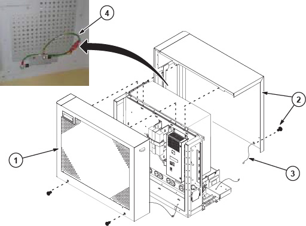

- 00000018WIA305CDF20GYZ
- id_131065213.6
- Apr 8, 2025 6:22:03 AM
Replacing the host computer - Dell T5810
Prerequisites
| Personnel requirements | |||
|---|---|---|---|
| Required persons | Preliminary requirements | Procedure | Finalization |
| 1 | - | 60 minutes | 120 minutes |
| Tools and test equipment | |||
|---|---|---|---|
| Item | Quantity | Part number | Manufacturer |
| Nonmagnetic Titanium Service Tool Kit | 1 | 5113258 | - |
| Disk Management Tool | 1 | - | - |
| Consumables | |||
|---|---|---|---|
| Item | Quantity | Part number | Manufacturer |
| GE equipment maintenance sticker | 1 | Refer to FRU manual | - |
| Replacement parts | |||
|---|---|---|---|
| Item | Quantity | Part number | Manufacturer |
| Dell T5810 computer | 1 | Refer to FRU manual | - |
| Dust filter (if needed) | 1 | Refer to FRU manual | - |
| Safety | ||||
|---|---|---|---|---|
|
Before working in any GE HealthCare MR suite or doing any GE HealthCare service procedure, you must:
If you have any safety concerns at any time, do not begin work or immediately stop work and move to a safe location. Immediately contact your supervisor or site safety officer for instructions on how to proceed. | ||||
| ||||
About this task
Prepare Workstation for Host Computer Removal
Procedure
Remove Host Computer from GOC
Procedure
- Remove the two screws that secure the left side panel of the
GOC.Note The side panel has a short ground lead connecting it to the main chassis. When removing the side panel, do not strain this ground lead.
Figure 1. Remove GOC Left Side Cover 
- Disconnect the short ground lead that connects the side panel
to the GOC main chassis at the center of the lead.
Figure 2. Left Side Panel Ground Lead 
Upgrading to Dell Host PC
About this task
The mounting brackets must be replaced for upgrading a different host PC to the Dell T5810.
-
Cables routed to the existing PC can be reused for connecting to the new PC.
-
Remove cable ties as necessary to make it easier to remove the cables that are routed into the PC.

Procedure
Install New Host Computer
Procedure
- Remove the dust filter and Velcro strips from the old computer, and install them on the new computer. If the old filter or Velcro strips are not reusable, install a new set.
Figure 10. Dust Filter 
1 Velcro strips 2 Dust filter